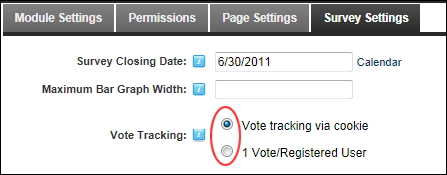

Setting Vote Tracking
How to set the type of tracking used to track the responses to a survey.
-
- Select the Survey Settings tab.
- At Vote Tracking, select from the following options:
- Vote tracking via cookie: Select to restrict voting to one vote per computer using a cookie. Each computer can only submit results once, unless the cookie is deleted. This option doesn't require users to login to vote.
- 1 Vote/Registered User: Select to restrict voting to one per registered user and requires users to be logged in to vote.

- Click the Update button.